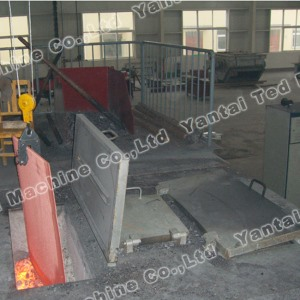
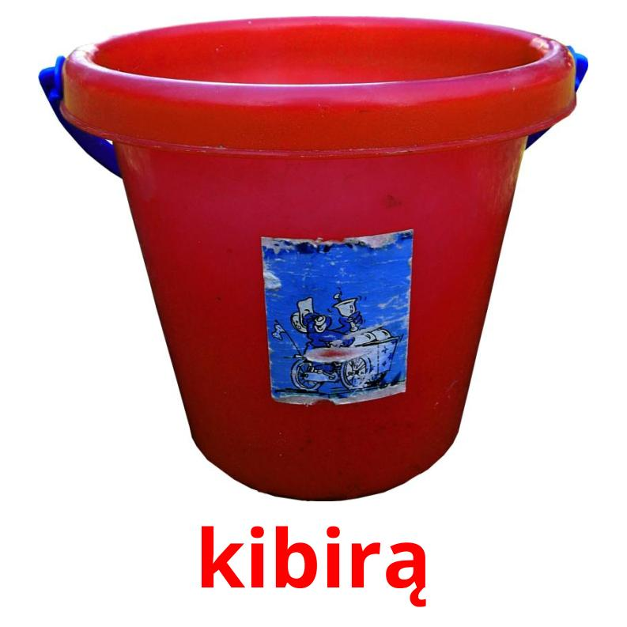
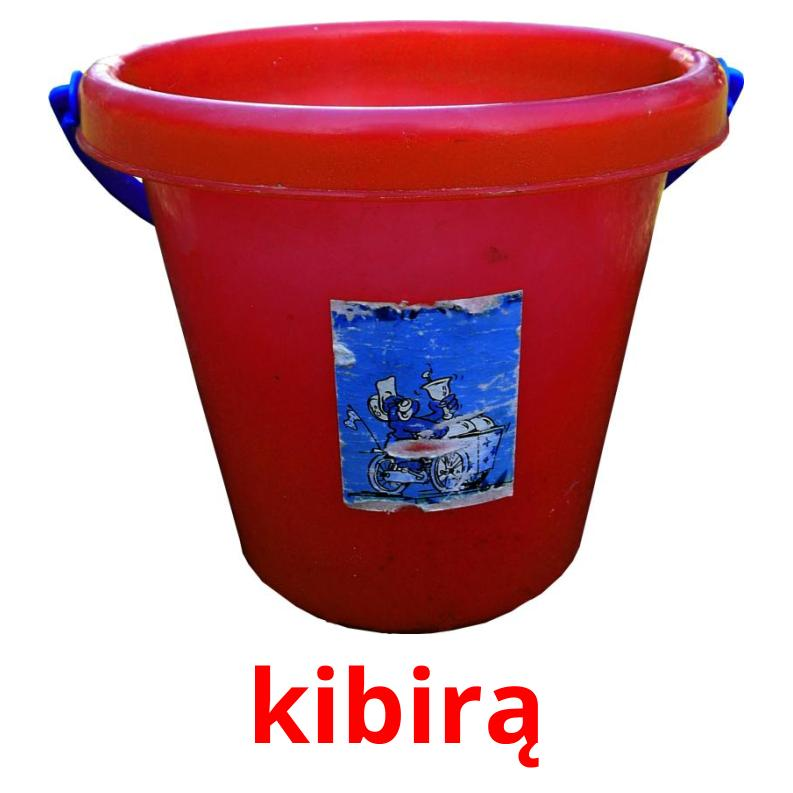

Horizontali juosta namų sienos - paskirties, stipriąsias ir silpnąsias puses, dizaino elementai, apžvalga modelių, remontas ir priežiūra
2020.10.30 05:13
Toggle navigation Sportas Grožis Ir Sveikata Sofos Kitas Sveikatos Lithuanian Croatian Czech Danish Dutch English Estonian Finnish French German Hebrew Hungarian Italian Latvian Lithuanian Norwegian Polish Portuguese Slovak Slovenian Spanish Swedish Turkish Serviceyards.com Interjero Dizainas Horizontali juosta namų sienos - paskirties, stipriąsias ir silpnąsias puses, dizaino elementai, apžvalga modelių, remontas ir priežiūra
Latest
😲 20 netikėtų sprendimai interjero dizaino: foto October 12, 2019 Kaip plauti veidrodį serija-nemokamai: konsultacijos, kompozicijos, variantai valymo iš įvairių teršalų October 12, 2019 Į vonios lubos Tempimo struktūros ir jų naudojimas October 12, 2019Horizontali juosta namų sienos - paskirties, stipriąsias ir silpnąsias puses, dizaino elementai, apžvalga modelių, remontas ir priežiūra
Interjero Dizainas October 11, 2019Kiek metų praėjo, ir mes visi prisimename, fizinės kultūros ir griežtai mokytojo pamokas, kurie visada sakė: sportuoti galima bet kur, jis norėtų. Paprasčiausias ir labiausiai prieinamas būdas pratybų - įprasta sportas Plotas , Negalima net galvoti ginčytis! Atrodytų, kad gali būti paprasčiau? Pasirodo, daug pratybų mašinos gali sėkmingai pakeisti sienos horizontalią juostą. Tas, kuris pakabintas kiekvienoje sovietmečiu kiemas tarp dviejų šakų didelio medžio ar normalaus tarpduryje. Šiandien Redakcijos HouseChief.ru primena savo skaitytojams, kaip svarbu yra stebėti savo sveikatą, ir kad paprastas, bet efektyvus sporto fitnesas mašina gali būti surinkti už denarą.
Ne, kas kiemas nesvarbu užaugo, bet ji tikrai buvo horizontali juosta!Skaityti straipsnį
1 Studijavimas temą: kodėl mes turime horizontalią juostą 2 Nepatogumų: privalumai ir trūkumai horizontalių strypų namams 3 Įranga Skersiniai dizaino ir montavimo galimybes 3.1 Horizontali juosta tarpduryje: niuansai ir šiuolaikinė išvaizda 3.2 Pagrindinis horizontali juosta ant sienos 3.3 šarnyru horizontali juosta 4 Kaip naudoti horizontalią juostą - Dėl traukos pagrindą ant baro 5 Kaip pasirinkti, jei jūs nuspręsite pirkti horizontalią juostą 6 Kaip padaryti savo rankas horizontalią juostą namų 6.1 Parengiamojo etapo 6.2 Padaryti horizontalią juostą 6.3 Nustatant gamybos dizaino 7 Vaizdo įrašas: kaip pasirinkti horizontalią juostą namuoseStudijavimas temą: kodėl mes turime horizontalią juostą
Horizontali juosta - lengviausias sporto įranga, prieinami visiems, nuo pat gimimo. Kai tik kūdikis pradeda kurti grabus refleksas, iš karto galima tiksliai sustabdytas nedideliame aukštyje. Pavyzdžiui "užšaldymo" padėti suformuoti teisingą laikyseną, atsipalaiduoti, sumažinti raumenų įtampą.
Net paprasčiausias sporto simuliatorius vaikams privalo turėti horizontalią juostą ir žiedaiKaip suaugęs, vaikas gali išmokti ir daugiau "rimtas" elementai. Lengviausias - kalendorius su kėlimo kojų. Šie pratimai stiprina pilvo raumenis. Jaunuoliui vienas iš labiausiai "mėgstamu" būdas išreikšti save traukia aukštyn, labiausiai kraštutinėmis perprasti "Saulė".
Pasakyk man, kaip dar nustebinti savo mėgstamą merginą? Arba įrodyti, kad jūs nesate WIMP?Svarbu! Horizontali juosta - viena iš nedaugelio paprastų treniruokliai, kuriame dalyvauja visas žmogus raumenis.
Klasės kamb sviedinio turi teigiamą poveikį kaulų ir raumenų audinio, elastinga formavimo jį tempimo. Raumenys yra natūralus apkrova artima visą treniruotę.
Nepatogumų: privalumai ir trūkumai horizontalių strypų namams
Kai pratimų tipų, pavyzdžiui, "Saulė", supasi, supynės iš buto erdvę gali būti neįmanoma. Pasirinkti įrengimo horizontalioje juostoje ir tvirtinimo metodas vietą yra būtina, visų pirma, atsižvelgti į galimus funkcinių apribojimų, kurie gali kilti jo montavimo metu.
Toks paprastas šarnyru dizainas, nepaisant jo mažą kainą, neturi apriboti stiprumo mokymas, vienintelis dalykas, kad nebus galima galimybės - tai yra visiškai "ratas"Tarp tokių "lubų" galimybių privalumų:
iš įvairių pratimų pasirinkimas; palengvinti surinkimo ir montavimo; mažo dydžio; gebėjimas judėti bet kurioje patalpoje (nors pėdsakai lieka po lubų išmontavimo); už prieinamą kainą; lengva savarankiškai surinkimas.komentaras
irina Rosenstein
Dizaineris studija "Jaukūs namai"
užduoti klausimą"Bet simuliatorius, ten yra svorio apribojimai! Būtinai patikslinti šį klausimą pardavėjo. Be to, iš anksto nuspręsti, ar sporto kilimėlis turi praktikuoti. "
Tarp horizontalių strypų namų trūkumai yra šie:
Įrengimas būtina užmegzti patikimą ryšį ir patikrinti tvirtinimo patikimumą. Tiesiog nagų "ant snarglius" tokį prietaisą neveiks; po to, kai išmontavimo (kaip jau nurodyta anksčiau) yra pėdsakai; funkcinis apribojimas.Įranga Skersiniai dizaino ir montavimo galimybes
Kaip jūs jau pastebėjote, The variantus namų šimtus horizontalių strypų. Jie visi skiriasi pagal varianto montavimas ir funkcionalumas. Viskas priklauso nuo tikslų, kuriuos nustatėte treniruokliai.
Tikėtina, kad horizontali juosta bus naudojamas sąlyginių sporto veiklaSusijęs straipsnis:
Švedijos sienos vaikams. Kas yra sienų barai, tipų vaikų Švedijos sienos, kaip pasirinkti sienos barai vaikui įrangos Švedijos sienos už paauglių vaiku, ar tai yra įmanoma, kad sienos barai vaikams su jų pačių rankose, rekomendacijos ekspertų - skaityti paskelbimo.
Horizontali juosta tarpduryje: niuansai ir šiuolaikinė išvaizda
Skersinio tarpduryje - viena iš labiausiai paplitusių rūšių sporto įrangos Šio tipo. Padėkite jį neatsižvelgiama daug, lengvai montuojami, verta cento.
Yra nuimamas modeliai, ir gali būti lengvai perkelti į kitą vietą, be pasekmių ir pėdsakųKaip matote, modernus horizontalias juostas - tai ne tik plieno vamzdis, tvirtinamas prie atramos, ši struktūra, kuri gali apimti keletą atramas ir specialius rašiklius. Apsvarstykite horizontalias juostas variacijos tarpduryje:
Dizainas ant petnešų . Paprastai šioje srityje struktūra stovai yra specialios sraigtiniai varžtai, kurie reguliuoja "gylis" sriegia į šoninės sienelės angą. Horizontali juosta ant tarpiklių Nuimamas skersinio. Šiuo atveju, sijos tvirtinimo taškai yra nustatomas kartą ir visiems laikams. Pašalinti horizontalaus strypo, pakelti iš griovelio pakankamai baras. Stumdomos į virpstą. Tokiais modelių, skersinis paprastai susideda iš kelių cilindrai teleskopiniu būdu renkant. Elementai stumdomas horizontalioje juostoje, esantys durisŠis horizontalių strypų tipas skiriasi labiausiai prieinamą kainą ir paprastą montavimą. Daugeliu atvejų toks konstrukcija yra labiau patikimas, nes geros atramos, kuri tvirtinimo pasiekiamas iš dviejų pusių.
Pagrindinis horizontali juosta ant sienos
Tačiau dažniausiai salėje ar daigynų įrengta pristennye horizontalios juostos . Paprastai, horizontali juosta elementas tampa naudingumas sporto kampe.
Nustatyti lukštai gali būti skirtingos, tačiau horizontali juosta yra kiekviename iš sporto kampeYra grynai sporto taškas sviediniai, kuriais siekiama tam tikrų raumenų vystymąsi. Dažniausiai tai yra modelis su tam tikru rankena.
Šiuo atveju horizontalioje juostoje dizainas pridėti specialių rankenas, kad leidžia daryti pratimus tam tikrų grupių raumenis: nugarą trapecijos ir priekines deltosTokie modeliai leidžia dot poveikį tam tikrų grupių raumenis. Klasės dėl tokių horizontalių strypų reikalauja "pumpavimo" raumenis kampu.
Patarimas! Prieš pasirinkdami "sudėtingumą;" modelis, jei esate pradedantysis, pirkti labiausiai paprastas, klasikinis. Galų gale, mokymo dėl sudėtingos sviedinio reikia fizinių rezervą raumenų masės. Todėl įdėti užduotį - rinkti jį paleisti.
Paprasčiausias sienų lukštai - klasika. Nėra nieko sudėtinga. Įprasta dizainas, standartinis rinkinys pratimai. Vienintelis dalykas, kad jūs galite "žaisti", - yra rankena variantai: pirmyn ir atgal, siauras, vidutinis, taip pat dirbti iš Bicepsas ir pečių raumenis.
Paprasčiausias tipo horizontalią juostą rėmo ant sienos. Jei atidžiai, šis apvalkalas gali būti visiškai surinkti savo rankasĮdomu horizontali juosta, kuri yra daugiau ir dažniau randami namų aplinkoje, variacijas sviedinys "trys viename": horizontalios juostą, lygiagrečių ir paspauskite.
Šie korpusai gali ne tik atlikti Pull-ups įvairaus rankena, bet ir pilvo pratimus ir push-upVienintelis trūkumas tokio treniruoklio - turi būti montuojamas prie sienos, taip pat specialiojo rezervo kojų pratimų dėl spaudos metu. Tačiau, mūsų nuomone, labiausiai universalus modelis horizontaliomis juostomis - kampe. Dėl funkcijų rinkinys, jie yra ne mažesnis nei pirmiau modelį, tačiau gali dėl jos statybos montuojamas net šalia durų, todėl klasę ant jo daugiau produktyvus. Be to, jie gali būti statmenai grindų ir į vandenį plokštumoje su juo.
Parinktis kampelis modelis horizontali juosta Vertikali kampelis Horizontali Barasšarnyru horizontali juosta
Tokie projektai yra labai paprasta naudoti, jei tikrai neturite pakankamai vietos. Modeliavimo gali būti perduodamos, "paslėpti" į balkonas Jis niekada nebus "kabinti aplink visur." Paprastai, šie horizontalios juostos yra patalpintas ant sienos barų, arba bet kurio kito tinkamo struktūros.
Nustatymo horizontalią juostą gali būti naudojamas kaip nepralaidžia jungtimi, nes ir varžtaiPagrindinis privalumas tokių struktūrų - jų santykinė pigiau ir paprastas surinkimas.
Kaip naudoti horizontalią juostą - Dėl traukos pagrindą ant baro
Kadangi mes nusprendėme skirti mūsų apžvalgą sveikos gyvensenos taisyklių, todėl gauti aplink kai tik sporto pusėje rekomendacijas mes negalime. Apsvarstykite pratybų parinktis skirtingomis raumenų grupių bare. Labiausiai paprastus pratimus ant horizontalaus skersinio - Traukimo. Bet neskubėkite! Ne taip paprasta. Net paprastas trauka į viršų gali mokyti kelis raumenų grupes. Viskas priklauso nuo rankena. Yra keletas jos rūšių:
klasikiniu (tiesioginis) - yra susipažinę su mumis traukiant kai palmių apima viršutinį apvalkalą; atkovoti - palmių fizinio krūvio metu sprendžiami žmogaus veidą. Kuris raumenys traukiniai tiesiogiai rankenaGrįžtamieji rankena - daugiau profesionalių būdas dirbti Biceps. Čia dalyvauja, yra visiškai skirtingi raumenų grupes.
Kad tinkamai veiktų Biceps žiūrėti rankų pozicijąPirmajame etape mokymas yra labai svarbus siekiant plėtoti technologijų mokymus simuliatoriuje. Jei jūs nežinote, kur pradėti mokymus baro, žiūrėti šį vaizdo įrašą.
Kaip pasirinkti, jei jūs nuspręsite pirkti horizontalią juostą
leidimas HouseChief.ru Ji rekomenduoja horizontalią juostą pagal užduotis, kad jūs nustatote sau. Geriau pradėti nuo paprastos, bet jei galite, tai geriau pirkti universalų modelį. Vienas iš jų, mūsų nuomone, yra elektros simuliatorius Starfit treniruotės (UT-00.006.919), kuris gali išspręsti keletą problemų organizuojant viso kūno treniruotės.
Išvaizda horizontali juosta Starfit treniruotėsPagrindinės techninės charakteristikos modelį.
vaizdas Matmenys (L × W) cm Maksimali apkrova, kg medžiaga svoris junginys sienos 81×115 160 Plieno, miltelinis dažymas, guma spaustuvai. 16,7 kilnojamasDizainas suteikia kablys pritvirtinti bokso maišą. Komplektą - 8 tvirtinimo detalės (HW-nagų), ir specialios kampai skirtas montuoti ant sienos. modelis, kaina prasideda nuo 3500 rublių. Kitas vertas dėmesio pavyzdys - "TN-2» (Įrašų sporto). Tai paprastas ir prieinamas modelis.
Procesas horizontali juosta mazgas "TN-2» (Įrašų Sportas)Horizontali juosta yra dvi rankenos: siauras ir platus. Modelis yra gana paprasta, patikima. surinkimo metu neturėtų būti problemų. Kaina modelis yra pakankamai demokratiška - 1800 rublių. Pagrindinės techninės charakteristikos modelį.
vaizdas Matmenys (L × P × C), mm Maksimali apkrova, kg medžiaga svoris junginys sienos 1100×400×330 300 Plieno, miltelinis dažymas, rankena neopreno. 4 neišardomuojuKitas, mūsų nuomone, įdomus modelis, tiksliau, tai yra daugiafunkcinis sporto simuliatorius "trys viename" - "horizontali juosta, lygiagrečių, paspauskite" 3 in 1 "iš Multihvat Borabo su blokavimo sistema.
Išvaizda "horizontali juosta-barai spauskite 3 in 1" iš BoraboModelis leidžia atlikti tiek pratimų siauras (45 °), ir platus rankena, tricepsas apkrova, vykdyti užsiėmimus su koeficiento. Pagrindinės techninės charakteristikos modelį.
vaizdas Matmenys (L × P × C), mm Maksimali apkrova, kg medžiaga svoris junginys "3 in 1" 1100×480×710 250 Plieno, milteliai danga, minkštas pagalvėlė, kabelis su svorių agento kg iki 100 kg. 18,5 kilnojamasŠio modelio kaina yra apie 5500 rublių diapazone. Nėra labai didelės išlaidos už visą sporto namuose.
Kaip padaryti savo rankas horizontalią juostą namų
Tiesą sakant, iš savęs gamybos horizontalioje juostoje galimybe klausimas yra tiesiogiai proporcingas darbo su metalu patirtį. Jei ši patirtis yra ir turi statybos įgūdžių, net surinkti sudėtingas simuliatorius kelia darbo. Net jei jums nereikia dirbti su suvirinimas Jūs visada galite rasti žmogų, kuris bus išspręsti šią problemą už jus. Tačiau, jūs gaunate unikalų treniruoklį su savo savybių rinkinį ir pritaikyti savo dydį. Žinoma, tai lengviau ir greičiau atlikti horizontalią juostą tarpduryje, bet tai taip įdomu? leidimas HouseChief.ru Jis nebijo iššūkių, todėl jums pasakys, kaip sukurti daugiafunkcinį sporto mašina, horizontalią juostą su jūsų rankose.
Parengiamojo etapo
Pirma, labiausiai svarbus etapas - paruošimas brėžinius, kurių matmenys yra. Būtina pasirinkti tinkamą rėmo elementai ir suprasti, iš anksto būtina "veiklos sritį" ir užduotis, kurias gali tekti perduoti kitiems.
Apytiksliai matmenys horizontalioje juostoje "3 in 1"Šiuo metu, jums reikia pasiimti visus daiktus, suspaudžiančių sistemos ir svoriniai agentai, jei reikia. Be to, parengti reikiamą priemonę visose darbo etapus.
Padaryti horizontalią juostą
Už darbą, turime nerūdijančio plieno vamzdis su 25 mm skersmens. ir siūlinis pjūklelis , Bulgarų, atsuktuvas ir, žinoma, ruletė. Pasirengimo pažymėtos ant metalinių vamzdžių, kaip ir kur bus įsikūrusi už ginklų sustoja, nugaros, sąnarių, šarnyrai dizainą. Mes atliekame reikiamus supjaustyti dalių. Žaliavos galite ieškoti nebevykdomi statybvietėje ar net šiukšlių. Labai dažnai nereikalingas vamzdis tiesiog mesti po bendravimo ir tinklų pakeitimo. Svarbu būti tinkamoje vietoje tinkamu laiku. Apsvarstykite po žingsnio instrukcijas žingsnis priėmimo horizontalią juostą su jūsų rankose.
iliustracija Aprašymas veiksmo Kaip junginių mes naudoti paprastųjų sanitarijos trišakiai. Kampai virinti jungtis ir sąnarius. Šiuo metu visi elementai jums reikia lygiu aukštyn. Antkainis suvirinimo sėdynę armatūros struktūros dalys. Mes atliekame būtinus darbus ant metalo: sumažinti dėlionės dizainas ir pagaląsti švitrinis popierius vietovardžių sąnarius, tada virkite. Nepamirškite apie pritvirtinti stotelių skliausteliuose! Už porankiais gamybai, naudojant įprastus medienos lentos , Grindinio ploną sluoksnį akytos medžiagos. Inkaravimo audinys baldų siūti.Nustatant gamybos dizaino
Šiame etape svarbu smėlio ir dažų visi sujungimai metalą. Tik tada jūs galite pradėti statyti.
iliustracija Aprašymas veiksmo Taigi, dizainas yra dažytos, varžtais stotelių. Pritvirtinti prie savadarbe simuliatorius sienos galima įsigyti gatavų areštas arba padaryti savo kabliukų.Vaizdo įrašas: kaip pasirinkti horizontalią juostą namuose
Kaip jūs galite pamatyti šiandien, nepriklausomoje gamybos horizontalioje juostoje nieko sudėtinga. Tai daug svarbiau rasti laiko praktika! Ir tam, kad jūs turite teisę motyvaciją, siūlome žiūrėti vaizdo įrašą apie tai, kaip pasirinkti horizontali juosta paruoštas namuose.
Rašykite savo klausimus komentaruose. Palikite savo nuomonę.
About us
Categories
Sportas Grožis Ir Sveikata Sofos Kitas Sveikatos Veidrodžiai Stalčiai Ir Stalai Foteliai Lovos VirtuvėLatest
Kosmetikos priemonės kailiui March 22, 2018 Kaip išvalyti užkandinę striukę namuose? March 22, 2018 Kaip padaryti nelygius džinsus namuose? March 22, 2018 © 2020 Serviceyards.com All Rights Reserved.- Hidroizoliacinės medžiagos - Izoliacinės medžiagos ...
- Drabužiai juostelės (30 nuotraukos): suknelės, megztiniai ...
- Horizontali lanksti LED juosta balta/šilta 60LED/12W/m ...
- Horizontalios juostos plėtimas: aprašymas - Įranga - 2020
- ⚙HORIZONTALI JUOSTA SU UŽVEDIMO EFEKTU HTML5, CSS3 IR ...
- Kaip pasirinkti horizontalų juostą butui - Sporto ...
- Sportinė horizontali juosta: matmenys, brėžiniai, tipai ...
- Kaip padaryti horizontalią juostą - Sporto įranga - 2020
- Klaipėdos vėliava ir jos istorija
- horizontali juosta skelbimai - Skelbiu.lt
- Hidroizoliacinės medžiagos - Izoliacinės medžiagos ...
Horizontali juosta su užvedimo efektu html5, css3 ir įkrovos lape Autorius: admininfo.info Paskelbimo Data: August/2020. Ko mums reikia? Vietinis serveris (aš jau sakiau, kad naudoju „Xampp“) ·
- Drabužiai juostelės (30 nuotraukos): suknelės, megztiniai ...
Horizontali juosta ant sienos, jei naudojate tam skirtus tvirtinimo varžtus, gali būti pritvirtinta ant bet kokio vertikalaus paviršiaus. Kokie yra modelio privalumai? Santykinai mažas dydis. Ši horizontali juosta gali tilpti net mažame kambaryje. Ir tai vyksta tuo pačiu metu labai, labai mažai. Jis gali būti bet kokiame aukštyje.
- Horizontali lanksti LED juosta balta/šilta 60LED/12W/m ...
Prekė sėkmingai įdėta į krepšelį. Rinktis daugiau prekių. Užsisakyti
- Horizontalios juostos plėtimas: aprašymas - Įranga - 2020
Senoji Klaipėdos vėliava gerokai skiriasi nuo dabartinės. Senojoje vėliavoje apačioje buvo raudona horizontali juosta, viršuje geltona ir miesto herbas viršutiniame kairiajame kampe. Dabartinės vėliavos spalvos išdėstytos kitaip - horizontaliai.
- ⚙HORIZONTALI JUOSTA SU UŽVEDIMO EFEKTU HTML5, CSS3 IR ...
Horizontali juosta kieme arba name - tai raktas į sveikatą ir gerą nuotaiką. Labai gerai, jei kiekvieną dieną galite pakelti arba nugara ant horizontalaus strypo, o ne užkliuvę treniruoklių salėje, bet ore. Taigi, pradėsime statyti horizontalią juostą gatvėje.
- Kaip pasirinkti horizontalų juostą butui - Sporto ...
Horizontali juosta namams. Šis šliuzas be gręžimo yra pritvirtintas traukos jėga, turintis pavasario dizainą. Kokios priežastys, kodėl daugelis žmonių renkasi horizontalią juostą sportui? Jis turi keletą privalumų: Norėdami ją įdiegti, nereikia sėti skylių į sieną ir nepažeisti visų rūšių tvirtinimo detalių ir varžtų.
- Sportinė horizontali juosta: matmenys, brėžiniai, tipai ...
Horizontali juosta su stuburo išvarža # 8212; jūsų „Move & Flex“ garantija. Stuburo išvaržos gydymas yra sudėtingas ir ilgas procesas. Daug paprasčiau tiesiog sekti „Move & Flex“ ir reaguoti į visas nugaros skausmo apraiškas. Labai svarbu atlikti prevenciją, ypač jei žmogus yra linkęs į osteochondrozę.
- Kaip padaryti horizontalią juostą - Sporto įranga - 2020
Namų horizontali juosta tai daro pats: brėžiniai, diagramos, nuotraukos. Share. Pin. Tweet. Send. Share. Send. Siekiant išlaikyti fizinį tinkamumą, ne kiekvienas turi galimybę eiti į sporto salę, bet pratimai gali būti atliekami namuose. Norėdami sustiprinti rankų raumenis, nugarėlė ir spauda gali padaryti namo horizontalią juostą.
- Klaipėdos vėliava ir jos istorija
Tačiau horizontali juosta, priešingai, padės jums atrodyti kaip mažas grybas, kaip jūsų kūnas bus byrėti. Tall merginos dažnai gėdijasi savo augimą. Bet tai nėra taip baisu, kaip atrodo. Jūs galite dėvėti tą patį, kaip viskas ir vis dar atrodo minkštas ir mažoji princesė. Dėl jums priartėti dalykus su juosmens juosta, ir ...
- horizontali juosta skelbimai - Skelbiu.lt
Horizontali juosta yra simuliatorius, leidžiantis išlaikyti savo kūną geros sveikatos namuose. Horizontalios juostos išvaizda ir funkcionalumas skiriasi. Jie gali būti tiek namuose, tiek šalyje ir gatvėje. Horizontali juosta - tai treniruoklis, kurį galima pagaminti savarankiškai.
Horizontali juosta su užvedimo efektu html5, css3 ir įkrovos lape Autorius: admininfo.info Paskelbimo Data: August/2020. Ko mums reikia? Vietinis serveris (aš jau sakiau, kad naudoju „Xampp“) ·
Horizontali juosta ant sienos, jei naudojate tam skirtus tvirtinimo varžtus, gali būti pritvirtinta ant bet kokio vertikalaus paviršiaus. Kokie yra modelio privalumai? Santykinai mažas dydis. Ši horizontali juosta gali tilpti net mažame kambaryje. Ir tai vyksta tuo pačiu metu labai, labai mažai. Jis gali būti bet kokiame aukštyje.
Prekė sėkmingai įdėta į krepšelį. Rinktis daugiau prekių. Užsisakyti
Senoji Klaipėdos vėliava gerokai skiriasi nuo dabartinės. Senojoje vėliavoje apačioje buvo raudona horizontali juosta, viršuje geltona ir miesto herbas viršutiniame kairiajame kampe. Dabartinės vėliavos spalvos išdėstytos kitaip - horizontaliai.
Horizontali juosta kieme arba name - tai raktas į sveikatą ir gerą nuotaiką. Labai gerai, jei kiekvieną dieną galite pakelti arba nugara ant horizontalaus strypo, o ne užkliuvę treniruoklių salėje, bet ore. Taigi, pradėsime statyti horizontalią juostą gatvėje.
Horizontali juosta namams. Šis šliuzas be gręžimo yra pritvirtintas traukos jėga, turintis pavasario dizainą. Kokios priežastys, kodėl daugelis žmonių renkasi horizontalią juostą sportui? Jis turi keletą privalumų: Norėdami ją įdiegti, nereikia sėti skylių į sieną ir nepažeisti visų rūšių tvirtinimo detalių ir varžtų.
Horizontali juosta su stuburo išvarža # 8212; jūsų „Move & Flex“ garantija. Stuburo išvaržos gydymas yra sudėtingas ir ilgas procesas. Daug paprasčiau tiesiog sekti „Move & Flex“ ir reaguoti į visas nugaros skausmo apraiškas. Labai svarbu atlikti prevenciją, ypač jei žmogus yra linkęs į osteochondrozę.
Namų horizontali juosta tai daro pats: brėžiniai, diagramos, nuotraukos. Share. Pin. Tweet. Send. Share. Send. Siekiant išlaikyti fizinį tinkamumą, ne kiekvienas turi galimybę eiti į sporto salę, bet pratimai gali būti atliekami namuose. Norėdami sustiprinti rankų raumenis, nugarėlė ir spauda gali padaryti namo horizontalią juostą.
Tačiau horizontali juosta, priešingai, padės jums atrodyti kaip mažas grybas, kaip jūsų kūnas bus byrėti. Tall merginos dažnai gėdijasi savo augimą. Bet tai nėra taip baisu, kaip atrodo. Jūs galite dėvėti tą patį, kaip viskas ir vis dar atrodo minkštas ir mažoji princesė. Dėl jums priartėti dalykus su juosmens juosta, ir ...
Horizontali juosta yra simuliatorius, leidžiantis išlaikyti savo kūną geros sveikatos namuose. Horizontalios juostos išvaizda ir funkcionalumas skiriasi. Jie gali būti tiek namuose, tiek šalyje ir gatvėje. Horizontali juosta - tai treniruoklis, kurį galima pagaminti savarankiškai.

 
